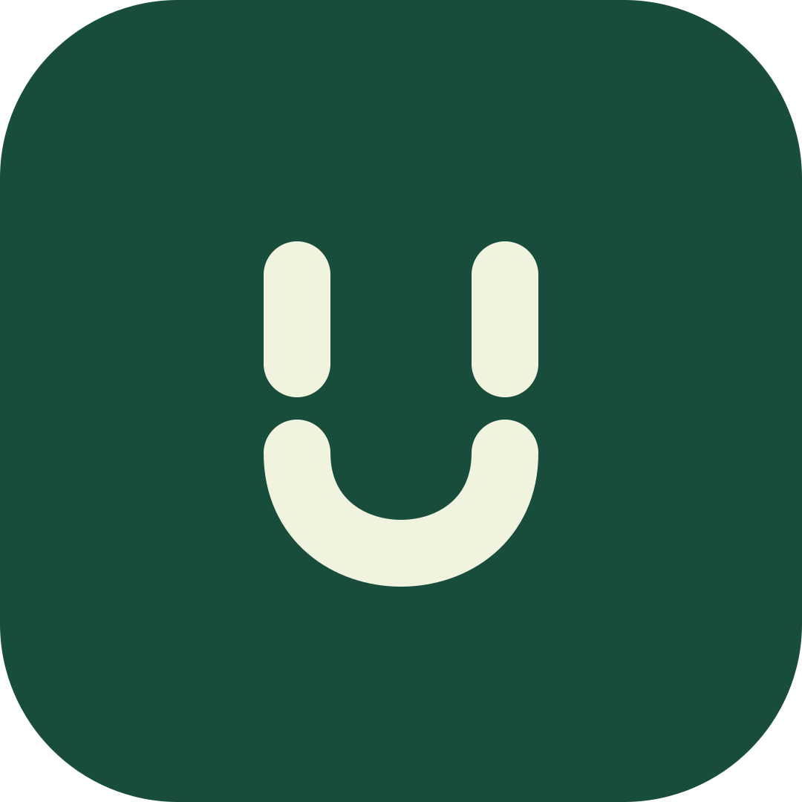

<!doctype html>
<html lang="zh-CN"><meta charset="utf-8"><meta name="viewport" content="width=device-width,initial-scale=1">
<title>Unscroll · 应用图标</title>
<style>
*{box-sizing:border-box}body{margin:0;background:#fafbf6;color:#194D3B;font:16px system-ui,"Microsoft YaHei",sans-serif}main{max-width:900px;margin:auto;padding:64px 28px}h1{font-size:36px;margin:8px 0 16px}p{line-height:1.8;color:#61756a}.hero{width:216px;margin:36px 0}.row{display:flex;flex-wrap:wrap;gap:40px;align-items:center;margin:36px 0}.sample{text-align:center}.icon{background:#194D3B;display:block;margin:0 auto 14px}.label{font-size:13px;color:#61756a}.circle{border-radius:50%}.square{border-radius:22%}.mono{background:#dcebdd;color:#244e3d;border-radius:50%}footer{border-top:1px solid #e2e9df;padding-top:24px;font-size:14px}
</style>
<main><span>UNSCROLL / APP ICON</span><h1>暂停一下，把注意力还给自己。</h1><p>两条暂停线，与一条轻轻托起的 U 形弧线。<br>深森林绿 × 柔和米白，延续应用的平静气质。</p>

<svg width="0" height="0" style="position:absolute" aria-hidden="true"><defs><symbol id="mark" viewBox="0 0 108 108"><path d="M40 37V49 M68 37V49 M40 61C40 79 68 79 68 61" fill="none" stroke="currentColor" stroke-width="9" stroke-linecap="round" stroke-linejoin="round"/></symbol></defs></svg>
<div class="row">
<div class="sample"><svg class="icon circle" width="108" height="108" style="color:#F0F4DF"><use href="#mark"/></svg><span class="label">圆形裁切</span></div>
<div class="sample"><svg class="icon square" width="108" height="108" style="color:#F0F4DF"><use href="#mark"/></svg><span class="label">圆角方形</span></div>
<div class="sample"><svg class="icon mono" width="108" height="108"><use href="#mark"/></svg><span class="label">Android 主题图标</span></div>
<div class="sample"><svg class="icon square" width="48" height="48" style="color:#F0F4DF"><use href="#mark"/></svg><span class="label">48 px</span></div>
<div class="sample"><svg class="icon square" width="32" height="32" style="color:#F0F4DF"><use href="#mark"/></svg><span class="label">32 px</span></div>
</div><footer>矢量源文件：unscroll-icon.svg · Android 自适应图标已接入应用；系统决定实际裁切形状。</footer></main></html>
